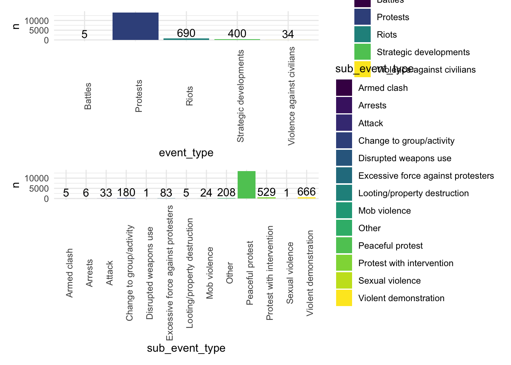
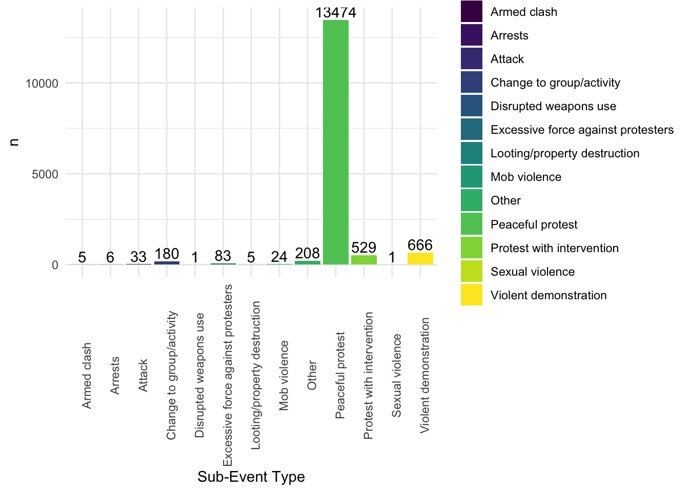

Exploratory Analysis of 2020 Protests in the US
Since early 2020, there has been a lot of media coverage of the Black Lives Matter protests in the United States. While there were peaceful protests occurring, it seemed that riots and events that turned violent were getting more media coverage, and therefore would appear to be occurring more than peaceful protests. The following plots show various ways to view the amount of protests that occurred in the United States between May and October 2020, and give perspective in the matter.
Proportion of Demonstrations that were Peaceful Protests vs. Riots in 2020
anim_data =
protest_data %>%
group_by(month, event_type) %>%
filter(event_type %in% c("Protests", "Riots")) %>%
count(event_type) %>%
summarize(
prop_event = sum(n)/15215
)
anim_plot =
anim_data %>%
ggplot(aes(x = month, y = prop_event, color = event_type)) +
geom_line() +
geom_point() +
labs(title = "Proportion of Protest and Riot Events by Month",
x = "Month",
y = "Proportion of Events") +
theme(plot.title = element_text(hjust = 0.5)) +
transition_reveal(month)
animate(anim_plot, renderer = gifski_renderer())
As shown in the plot above, there were overall more peaceful protests than riots each month in the data. To us, this shows the power that the media has in shaping the perspective of individuals.
Number of each Event Type and Number of Each Event Subtype Recorded
protest_data %>%
group_by(event_type) %>%
count() %>%
ggplot(aes(x = event_type, y = n, fill = event_type)) +
geom_col() +
geom_text(aes(x = event_type, y = n, label = n), position = position_dodge(width = 0.9), vjust = -0.25) +
theme(axis.text.x = element_text(angle = 90),
legend.position = "right") +
labs(x = "Event Type")
protest_data %>%
group_by(sub_event_type) %>%
count() %>%
ggplot(aes(x = sub_event_type, y = n, fill = sub_event_type)) +
geom_col() +
geom_text(aes(x = sub_event_type, y = n, label = n), position = position_dodge(width = 0.9), vjust = -0.25) +
theme(axis.text.x = element_text(angle = 90),
legend.position = "right") +
labs(x = "Sub-Event Type")
The first bar plot reiterates what was shown in the scatterplot above: there were far more protests recorded than any other type of event, contrary to what is often depicted. The second bar plot further breaks down the events in the first bar plot into sub-event types and shows that peaceful protests were again the type of event that happened overall far more than the other sub-event types.
Protest Events by State
protest_data %>%
mutate(
state = as.factor(state)
) %>%
filter(event_type == "Protests") %>%
count(state) %>%
mutate(
state = fct_reorder(state, n, .desc = TRUE)
) %>%
plot_ly(
y = ~n, x = ~state, color = ~state,
type = "bar", colors = "viridis")## Warning: `arrange_()` is deprecated as of dplyr 0.7.0.
## Please use `arrange()` instead.
## See vignette('programming') for more help
## This warning is displayed once every 8 hours.
## Call `lifecycle::last_warnings()` to see where this warning was generated.The above plot depicts the number of protest events that occurred in each state between May and October 2020. Overall, there were far more protests in California than in any other state. Florida, Illinois, New York, Pennsylvania, and Texas also had larger numbers of protests during the data coverage period. This is not surprising given that these states have large populations and have big, highly populated cities.